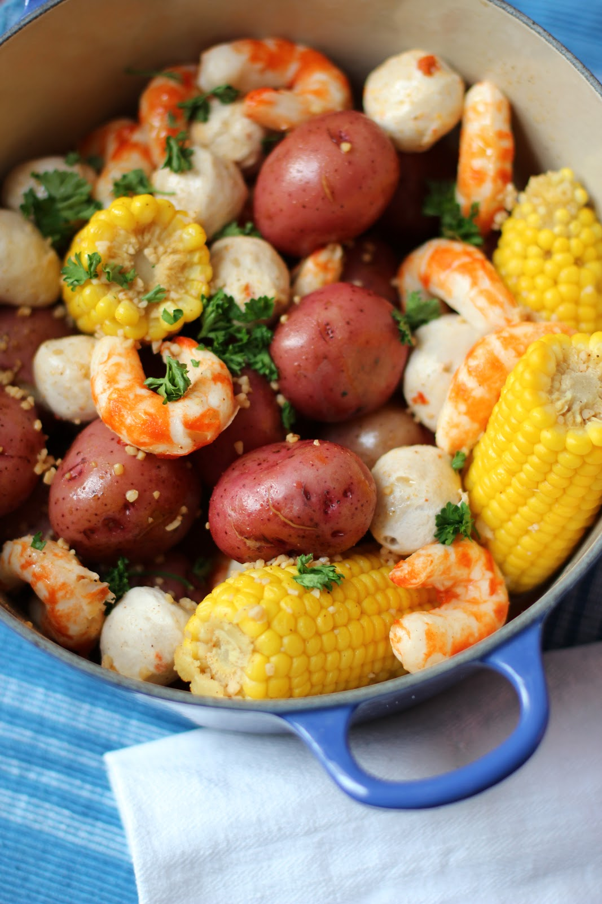

Cajun-Inspired Vegan Shrimp Boil

Description
This no-seafood vegan boil is going to blow your mind.
Corn on the cob, potatoes, broccoli, vegan shrimp, sausage and more topped with an
incredible vegan cajun butter sauce. It's a great dish for a vegan cookout or
get-together, and for the holidays!
Ingredients
The Boil:
- 16-20 cups water
- 1 tbsp salt
- 1 crab boil seasoning in a bag - like Zatarain's
- 1 lemon - quartered
- 1 yellow onion - peeled and quartered
- 4 ears corn on the cob - shucked and cut into halves or thirds
- 2-3 lbs baby potatoes - washed
- 1 large head broccoli - cut into florets
- 1 lb fresh green beans - trimmed
The Cajun Butter Sauce
- ¾ cup vegan butter
- 2 tsp garlic powder
- 2 tsp onion powder
- 2 tsp Old Bay seasoning
- 1 tsp paprika
- 1-2 tsp Cajun seasoning
- ¾ cup vegetable stock
- 2 tsp lemon juice
- salt to taste - if needed
The Vegan Sausage and Shrimp
- 4 links vegan sausage
- 1 bag BeLeaf vegan shrimp
- 4 tsp oil or vegan butter